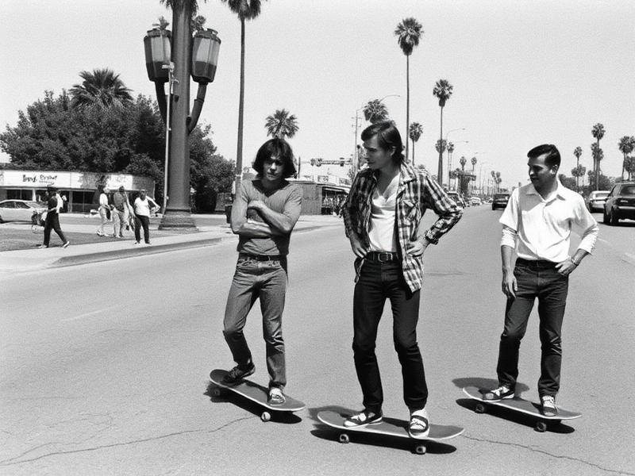

Des Rues de Californie aux Jeux Olympiques

Les Origines (1950–1970)
Le skateboard est né sur les trottoirs de Californie dans les années 50. À l’époque, les surfeurs cherchaient un moyen de “surfer la rue” les jours sans vagues. Ils fixèrent des roues de patins à roulettes sous des planches de bois : c’était la naissance du skate, encore instable et dangereux, mais porteur d’un esprit nouveau — celui de la liberté.
La Révolution (1970–1990)
Frank Nasworthy invente les roues en uréthane, offrant au skate une fluidité inédite. Les Z-Boys de Dogtown redéfinissent les codes : ride, créativité et défi permanent.
Le Skate Moderne (2000–Aujourd’hui)
En 2021, le skate entre aux Jeux Olympiques de Tokyo. Malgré la reconnaissance mondiale, l’âme du skate reste la même : rouler librement et créer son propre style.